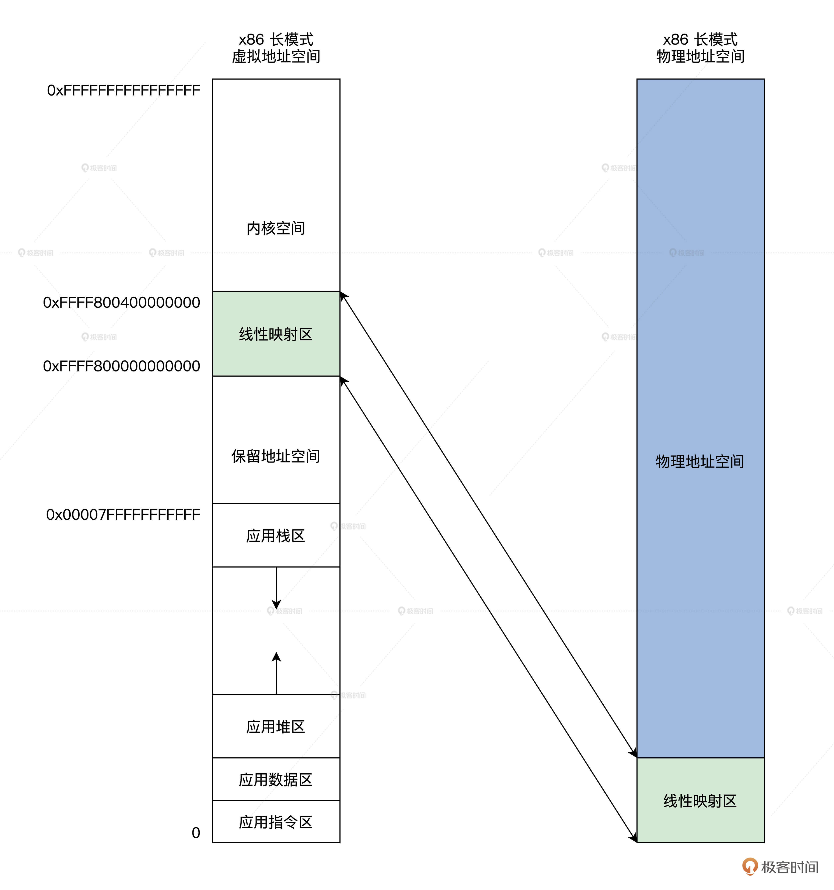
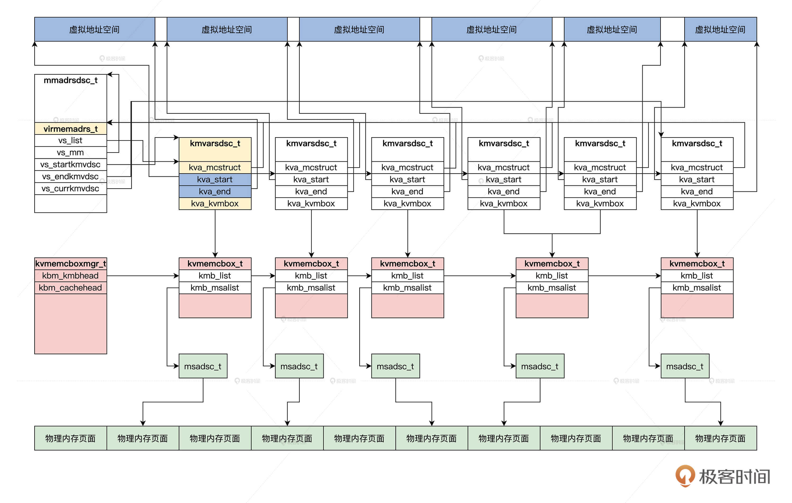

- 00 开篇词 为什么要学写一个操作系统？.md.html
- 00 编辑手记 升级认知，迭代自己的操作系统.md.html
- 01 程序的运行过程：从代码到机器运行.md.html
- 02 几行汇编几行C：实现一个最简单的内核.md.html
- 03 黑盒之中有什么：内核结构与设计.md.html
- 04 震撼的Linux全景图：业界成熟的内核架构长什么样？.md.html
- 05 CPU工作模式：执行程序的三种模式.md.html
- 06 虚幻与真实：程序中的地址如何转换？.md.html
- 07 Cache与内存：程序放在哪儿？.md.html
- 08 锁：并发操作中，解决数据同步的四种方法.md.html
- 09 瞧一瞧Linux：Linux的自旋锁和信号量如何实现？.md.html
- 10 设置工作模式与环境（上）：建立计算机.md.html
- 11 设置工作模式与环境（中）：建造二级引导器.md.html
- 12 设置工作模式与环境（下）：探查和收集信息.md.html
- 13 第一个C函数：如何实现板级初始化？.md.html
- 14 Linux初始化（上）：GRUB与vmlinuz的结构.md.html
- 15 Linux初始化（下）：从_start到第一个进程.md.html
- 16 划分土地（上）：如何划分与组织内存？.md.html
- 17 划分土地（中）：如何实现内存页面初始化？.md.html
- 18 划分土地（下）：如何实现内存页的分配与释放？.md.html
- 19 土地不能浪费：如何管理内存对象？.md.html
- 20 土地需求扩大与保障：如何表示虚拟内存？.md.html
- 21 土地需求扩大与保障：如何分配和释放虚拟内存？.md.html
- 22 瞧一瞧Linux：伙伴系统如何分配内存？.md.html
- 23 瞧一瞧Linux：SLAB如何分配内存？.md.html
- 24 活动的描述：到底什么是进程？.md.html
- 25 多个活动要安排（上）：多进程如何调度？.md.html
- 26 多个活动要安排（下）：如何实现进程的等待与唤醒机制？.md.html
- 27 瞧一瞧Linux：Linux如何实现进程与进程调度_.md.html
- 28 部门分类：如何表示设备类型与设备驱动？.md.html
- 29 部门建立：如何在内核中注册设备？.md.html
- 30 部门响应：设备如何处理内核I_O包？.md.html
- 31 瞧一瞧Linux：如何获取所有设备信息？.md.html
- 32 仓库结构：如何组织文件_.md.html
- 33 仓库划分：文件系统的格式化操作.md.html
- 34 仓库管理：如何实现文件的六大基本操作？.md.html
- 35 瞧一瞧Linux：虚拟文件系统如何管理文件？.md.html
- 36 从URL到网卡：如何全局观察网络数据流动？.md.html
- 37 从内核到应用：网络数据在内核中如何流转.md.html
- 38 从单排到团战：详解操作系统的宏观网络架构.md.html
- 39 瞧一瞧Linux：详解socket实现与网络编程接口.md.html
- 40 瞧一瞧Linux：详解socket的接口实现.md.html
- 41 服务接口：如何搭建沟通桥梁？.md.html
- 42 瞧一瞧Linux：如何实现系统API？.md.html
- 43 虚拟机内核：KVM是什么？.md.html
- 44 容器：如何理解容器的实现机制？.md.html
- 45 ARM新宠：苹果的M1芯片因何而快？.md.html
- 46 AArch64体系：ARM最新编程架构模型剖析.md.html
- LMOS来信：第二季课程带你“手撕”计算机基础.md.html
- 大咖助场 以无法为有法，以无限为有限.md.html
- 用户故事 yiyang：我的上机实验“爬坑指南”.md.html
- 用户故事 成为面向“知识库”的工程师.md.html
- 用户故事 技术人如何做选择，路才越走越宽？.md.html
- 用户故事 操作系统发烧友：看不懂？因为你没动手.md.html
- 用户故事 用好动态调试，助力课程学习.md.html
- 用户故事 艾同学：路虽远，行则将至.md.html
- 结束语 生活可以一地鸡毛，但操作系统却是心中的光.md.html
- 捐赠
20 土地需求扩大与保障：如何表示虚拟内存？
你好，我是LMOS。
在现实中，有的人需要向政府申请一大块区域，在这块区域中建楼办厂，但是土地有限且已经被占用。所以可能的方案是，只给你分配一个总的面积区域，今年湖北有空地就在湖北建立一部分厂房，明年广东有空地就在广东再建另一部分厂房，但是总面积不变。
其实在计算机系统中也有类似的情况，一个应用往往拥有很大的连续地址空间，并且每个应用都是一样的，只有在运行时才能分配到真正的物理内存，在操作系统中这称为虚拟内存。
那问题来了，操作系统要怎样实现虚拟内存呢？由于内容比较多，我会用两节课的时间带你解决这个问题。今天这节课，我们先进行虚拟地址空间的划分，搞定虚拟内存数据结构的设计。下节课再动手实现虚拟内存的核心功能。
好，让我们进入正题，先从虚拟地址空间的划分入手，配套代码你可以从这里获得。
虚拟地址空间的划分
虚拟地址就是逻辑上的一个数值，而虚拟地址空间就是一堆数值的集合。通常情况下，32位的处理器有0～0xFFFFFFFF的虚拟地址空间，而64位的虚拟地址空间则更大，有0～0xFFFFFFFFFFFFFFFF的虚拟地址空间。
对于如此巨大的地址空间，我们自然需要一定的安排和设计，比如什么虚拟地址段放应用，什么虚拟地址段放内核等。下面我们首先看看处理器硬件层面的划分，再来看看在此基础上我们系统软件层面是如何划分的。
x86 CPU如何划分虚拟地址空间
我们Cosmos工作在x86 CPU上，所以我们先来看看x86 CPU是如何划分虚拟地址空间的。
由于x86 CPU支持虚拟地址空间时，要么开启保护模式，要么开启长模式，保护模式下是32位的，有0～0xFFFFFFFF个地址，可以使用完整的4GB虚拟地址空间。
在保护模式下，对这4GB的虚拟地址空间没有进行任何划分，而长模式下是64位的虚拟地址空间有0～0xFFFFFFFFFFFFFFFF个地址，这个地址空间非常巨大，硬件工程师根据需求设计，把它分成了3段，如下图所示。
长模式下，CPU目前只实现了48位地址空间，但寄存器却是64位的，CPU自己用地址数据的第47位的值扩展到最高16位，所以64位地址数据的最高16位，要么是全0，要么全1，这就是我们在上图看到的情形。
Cosmos如何划分虚拟地址空间
现在我们来规划一下，Cosmos对x86 CPU长模式下虚拟地址空间的使用。由前面的图形可以看出，在长模式下，整个虚拟地址空间只有两段是可以用的，很自然一段给内核，另一段就给应用。
我们把0xFFFF800000000000～0xFFFFFFFFFFFFFFFF虚拟地址空间分给内核，把0～0x00007FFFFFFFFFFF虚拟地址空间分给应用，内核占用的称为内核空间，应用占用的就叫应用空间。
在内核空间和应用空间中，我们又继续做了细分。后面的图并不是严格按比例画的，应用程序在链接时，会将各个模块的指令和数据分别放在一起，应用程序的栈是在最顶端，向下增长，应用程序的堆是在应用程序数据区的后面，向上增长。
内核空间中有个线性映射区0xFFFF800000000000～0xFFFF800400000000，这是我们在二级引导器中建立的MMU页表映射。

如何设计数据结构
根据前面经验，我们要实现一个功能模块，首先要设计出相应的数据结构，虚拟内存模块也一样。
这里涉及到虚拟地址区间，管理虚拟地址区间以及它所对应的物理页面，最后让进程和虚拟地址空间相结合。这些数据结构小而多，下面我们一个个来设计。
虚拟地址区间
我们先来设计虚拟地址区间数据结构，由于虚拟地址空间非常巨大，我们绝不能像管理物理内存页面那样，一个页面对应一个结构体。那样的话，我们整个物理内存空间或许都放不下所有的虚拟地址区间数据结构的实例变量。
由于虚拟地址空间往往是以区为单位的，比如栈区、堆区，指令区、数据区，这些区内部往往是连续的，区与区之间却间隔了很大空间，而且每个区的空间扩大时我们不会建立新的虚拟地址区间数据结构，而是改变其中的指针，这就节约了内存空间。
下面我们来设计这个数据结构，代码如下所示。
typedef struct KMVARSDSC
{
spinlock_t kva_lock; //保护自身自旋锁
u32_t kva_maptype; //映射类型
list_h_t kva_list; //链表
u64_t kva_flgs; //相关标志
u64_t kva_limits;
void* kva_mcstruct; //指向它的上层结构
adr_t kva_start; //虚拟地址的开始
adr_t kva_end; //虚拟地址的结束
kvmemcbox_t* kva_kvmbox; //管理这个结构映射的物理页面
void* kva_kvmcobj;
}kmvarsdsc_t;
如你所见，除了自旋锁、链表、类型等字段外，最重要的就是虚拟地址的开始与结束字段，它精确描述了一段虚拟地址空间。
整个虚拟地址空间如何描述
有了虚拟地址区间的数据结构，怎么描述整个虚拟地址空间呢？我们整个的虚拟地址空间，正是由多个虚拟地址区间连接起来组成，也就是说，只要把许多个虚拟地址区间数据结构按顺序连接起来，就可以表示整个虚拟地址空间了。
这个数据结构我们这样来设计。
typedef struct s_VIRMEMADRS
{
spinlock_t vs_lock; //保护自身的自旋锁
u32_t vs_resalin;
list_h_t vs_list; //链表，链接虚拟地址区间
uint_t vs_flgs; //标志
uint_t vs_kmvdscnr; //多少个虚拟地址区间
mmadrsdsc_t* vs_mm; //指向它的上层的数据结构
kmvarsdsc_t* vs_startkmvdsc; //开始的虚拟地址区间
kmvarsdsc_t* vs_endkmvdsc; //结束的虚拟地址区间
kmvarsdsc_t* vs_currkmvdsc; //当前的虚拟地址区间
adr_t vs_isalcstart; //能分配的开始虚拟地址
adr_t vs_isalcend; //能分配的结束虚拟地址
void* vs_privte; //私有数据指针
void* vs_ext; //扩展数据指针
}virmemadrs_t;
从上述代码可以看出，virmemadrs_t结构管理了整个虚拟地址空间的kmvarsdsc_t结构，kmvarsdsc_t结构表示一个虚拟地址区间。这样我们就能知道，虚拟地址空间中哪些地址区间没有分配，哪些地址区间已经分配了。
进程的内存地址空间
虚拟地址空间作用于应用程序，而应用程序在操作系统中用进程表示。
当然，一个进程有了虚拟地址空间信息还不够，还要知道进程和虚拟地址到物理地址的映射信息，应用程序文件中的指令区、数据区的开始、结束地址信息。
所以，我们要把这些信息综合起来，才能表示一个进程的完整地址空间。这个数据结构我们可以这样设计，代码如下所示。
typedef struct s_MMADRSDSC
{
spinlock_t msd_lock; //保护自身的自旋锁
list_h_t msd_list; //链表
uint_t msd_flag; //状态和标志
uint_t msd_stus;
uint_t msd_scount; //计数，该结构可能被共享
sem_t msd_sem; //信号量
mmudsc_t msd_mmu; //MMU相关的信息
virmemadrs_t msd_virmemadrs; //虚拟地址空间
adr_t msd_stext; //应用的指令区的开始、结束地址
adr_t msd_etext;
adr_t msd_sdata; //应用的数据区的开始、结束地址
adr_t msd_edata;
adr_t msd_sbss;
adr_t msd_ebss;
adr_t msd_sbrk; //应用的堆区的开始、结束地址
adr_t msd_ebrk;
}mmadrsdsc_t;
进程的物理地址空间，其实可以用一组MMU的页表数据表示，它保存在mmudsc_t数据结构中，但是这个数据结构我们不在这里研究，放在后面再研究。
页面盒子
我们知道每段虚拟地址区间，在用到的时候都会映射对应的物理页面。根据前面我们物理内存管理器的设计，每分配一个或者一组内存页面，都会返回一个msadsc_t结构，所以我们还需要一个数据结构来挂载msadsc_t结构。
但为什么不直接挂载到kmvarsdsc_t结构中去，而是要设计一个新的数据结构呢？
我们当然有自己的考虑，一般虚拟地址区间是和文件对应的数据相关联的。比如进程的应用程序文件，又比如把一个文件映射到进程的虚拟地址空间中，只需要在内存页面中保留一份共享文件，多个程序就都可以共享它。
常规操作就是把同一个物理内存页面映射到不同的虚拟地址区间，所以我们实现一个专用的数据结构，共享操作时就可以让多个kmvarsdsc_t结构指向它，代码如下所示。
typedef struct KVMEMCBOX
{
list_h_t kmb_list; //链表
spinlock_t kmb_lock; //保护自身的自旋锁
refcount_t kmb_cont; //共享的计数器
u64_t kmb_flgs; //状态和标志
u64_t kmb_stus;
u64_t kmb_type; //类型
uint_t kmb_msanr; //多少个msadsc_t
list_h_t kmb_msalist; //挂载msadsc_t结构的链表
kvmemcboxmgr_t* kmb_mgr; //指向上层结构
void* kmb_filenode; //指向文件节点描述符
void* kmb_pager; //指向分页器 暂时不使用
void* kmb_ext; //自身扩展数据指针
}kvmemcbox_t;
到这里为止，一个内存页面容器盒子就设计好了，它可以独立存在，又和虚拟内存区间有紧密的联系，甚至可以用来管理文件数据占用的物理内存页面。
页面盒子的头
kvmemcbox_t结构是一个独立的存在，我们必须能找到它，所以还需要设计一个全局的数据结构，用于管理所有的kvmemcbox_t结构。这个结构用于挂载kvmemcbox_t结构，对其进行计数，还要支持缓存多个空闲的kvmemcbox_t结构，代码如下所示。
typedef struct KVMEMCBOXMGR
{
list_h_t kbm_list; //链表
spinlock_t kbm_lock; //保护自身的自旋锁
u64_t kbm_flgs; //标志与状态
u64_t kbm_stus;
uint_t kbm_kmbnr; //kvmemcbox_t结构个数
list_h_t kbm_kmbhead; //挂载kvmemcbox_t结构的链表
uint_t kbm_cachenr; //缓存空闲kvmemcbox_t结构的个数
uint_t kbm_cachemax; //最大缓存个数，超过了就要释放
uint_t kbm_cachemin; //最小缓存个数
list_h_t kbm_cachehead; //缓存kvmemcbox_t结构的链表
void* kbm_ext; //扩展数据指针
}kvmemcboxmgr_t;
上述代码中的缓存相关的字段，是为了防止频繁分配、释放kvmemcbox_t结构带来的系统性能抖动。同时，缓存几十个kvmemcbox_t结构下次可以取出即用，不必再找内核申请，这样可以大大提高性能。
理清数据结构之间的关系
现在，所有的数据结构已经设计完成，比较多。其中每个数据结构的功能我们已经清楚了，唯一欠缺的是，我们还没有明白它们之间的关系是什么。
只有理清了它们之间的关系，你才能真正明白，它们组合在一起是怎么完成整个功能的。
我们在写代码时，脑中有图，心中才有底。这里我给你画了一张图，为了降低复杂性，我并没有画出数据结构的每个字段，图里只是表达一下它们之间的关系。

这张图你需要按照从上往下、从左到右来看。首先从进程的虚拟地址空间开始，而进程的虚拟地址是由kmvarsdsc_t结构表示的，一个kmvarsdsc_t结构就表示一个已经分配出去的虚拟地址空间。一个进程所有的kmvarsdsc_t结构，要交给进程的mmadrsdsc_t结构中的virmemadrs_t结构管理。
我们继续往下看，为了管理虚拟地址空间对应的物理内存页面，我们建立了kvmembox_t结构，它由kvmemcboxmgr_t结构统一管理。在kvmembox_t结构中，挂载了物理内存页面对应的msadsc_t结构。
整张图片完整地展示了从虚拟内存到物理内存的关系，理清了这些数据结构关系之后，我们就可以写代码实现了。
初始化
由于我们还没有讲到进程相关的章节，而虚拟地址空间的分配与释放，依赖于进程数据结构下的mmadrsdsc_t数据结构，所以我们得想办法产生一个mmadrsdsc_t数据结构的实例变量，最后初始化它。
下面我们先在cosmos/kernel/krlglobal.c文件中，申明一个mmadrsdsc_t数据结构的实例变量，代码如下所示。
KRL_DEFGLOB_VARIABLE(mmadrsdsc_t, initmmadrsdsc);
接下来，我们要初始化这个申明的变量，操作也不难。因为这是属于内核层的功能了，所以要在cosmos/kernel/目录下建立一个模块文件krlvadrsmem.c，在其中写代码，如下所示。
bool_t kvma_inituserspace_virmemadrs(virmemadrs_t *vma)
{
kmvarsdsc_t *kmvdc = NULL, *stackkmvdc = NULL;
//分配一个kmvarsdsc_t
kmvdc = new_kmvarsdsc();
if (NULL == kmvdc)
{
return FALSE;
}
//分配一个栈区的kmvarsdsc_t
stackkmvdc = new_kmvarsdsc();
if (NULL == stackkmvdc)
{
del_kmvarsdsc(kmvdc);
return FALSE;
}
//虚拟区间开始地址0x1000
kmvdc->kva_start = USER_VIRTUAL_ADDRESS_START + 0x1000;
//虚拟区间结束地址0x5000
kmvdc->kva_end = kmvdc->kva_start + 0x4000;
kmvdc->kva_mcstruct = vma;
//栈虚拟区间开始地址0x1000USER_VIRTUAL_ADDRESS_END - 0x40000000
stackkmvdc->kva_start = PAGE_ALIGN(USER_VIRTUAL_ADDRESS_END - 0x40000000);
//栈虚拟区间结束地址0x1000USER_VIRTUAL_ADDRESS_END
stackkmvdc->kva_end = USER_VIRTUAL_ADDRESS_END;
stackkmvdc->kva_mcstruct = vma;
knl_spinlock(&vma->vs_lock);
vma->vs_isalcstart = USER_VIRTUAL_ADDRESS_START;
vma->vs_isalcend = USER_VIRTUAL_ADDRESS_END;
//设置虚拟地址空间的开始区间为kmvdc
vma->vs_startkmvdsc = kmvdc;
//设置虚拟地址空间的开始区间为栈区
vma->vs_endkmvdsc = stackkmvdc;
//加入链表
list_add_tail(&kmvdc->kva_list, &vma->vs_list);
list_add_tail(&stackkmvdc->kva_list, &vma->vs_list);
//计数加2
vma->vs_kmvdscnr += 2;
knl_spinunlock(&vma->vs_lock);
return TRUE;
}
void init_kvirmemadrs()
{
//初始化mmadrsdsc_t结构非常简单
mmadrsdsc_t_init(&initmmadrsdsc);
//初始化进程的用户空间
kvma_inituserspace_virmemadrs(&initmmadrsdsc.msd_virmemadrs);
}
上述代码中，init_kvirmemadrs函数首先调用了mmadrsdsc_t_init，对我们申明的变量进行了初始化。因为这个变量中有链表、自旋锁、信号量这些数据结构，必须要初始化才能使用。
最后调用了kvma_inituserspace_virmemadrs函数，这个函数中建立了一个虚拟地址区间和一个栈区，栈区位于虚拟地址空间的顶端。下面我们在krlinit..c中的init_krl函数中来调用它。
void init_krl()
{
//初始化内核功能层的内存管理
init_krlmm();
die(0);
return;
}
void init_krlmm()
{
init_kvirmemadrs();
return;
}
至此，我们的内核功能层的初始流程就建立起来了，是不是很简单呢？
重点回顾
至此我们关于虚拟内存的虚拟地址空间的划分和虚拟内存数据结构的设计就结束了，我把这节课的重点为你梳理一下。
首先是虚拟地址空间的划分。由于硬件平台的物理特性，虚拟地址空间被分成了两段，Cosmos也延续了这种划分的形式，顶端的虚拟地址空间为内核占用，底端为应用占用。内核还建立了16GB的线性映射区，而应用的虚拟地址空间分成了指令区，数据区，堆区，栈区。
然后为了实现虚拟地址内存，我们设计了大量的数据结构，它们分别是虚拟地址区间kmvarsdsc_t结构、管理虚拟地址区间的虚拟地址空间virmemadrs_t结构、包含virmemadrs_t结构和mmudsc_t结构的mmadrsdsc_t结构、用于挂载msadsc_t结构的页面盒子的kvmemcbox_t结构、还有用于管理所有的kvmemcbox_t结构的kvmemcboxmgr_t结构。

最后是初始化工作。由于我们还没有进入到进程相关的章节，所以这里必须要申明一个进程相关的mmadrsdsc_t结构的实例变量，并进行初始化，这样我们才能测试虚拟内存的功能。
思考题
请问内核虚拟地址空间为什么有一个0xFFFF800000000000～0xFFFF800400000000的线性映射区呢？
欢迎你在留言区跟我交流讨论。如果这节课对你有帮助，也欢迎你分享给你的朋友。
我是LMOS，我们下节课见！
© 2019 - 2023 Liangliang Lee. Powered by gin and hexo-theme-book.